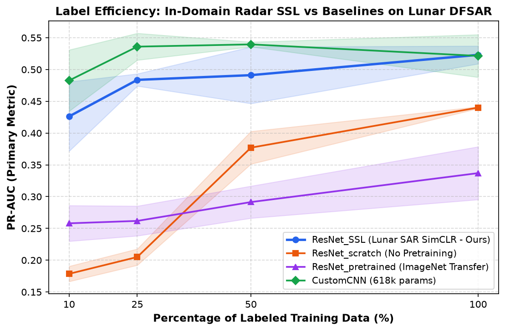
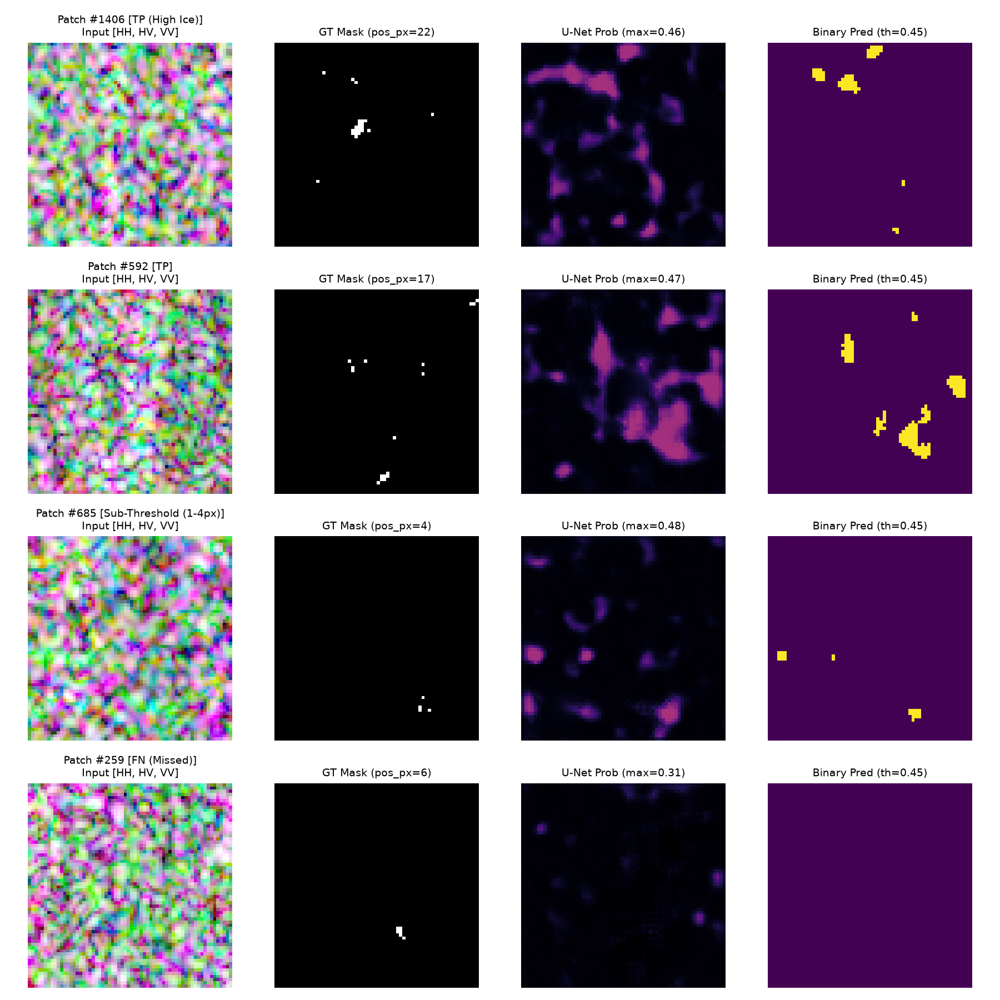

Contents
IceShadowNet
Deep Learning Detection, Pixel-Level Localization, and Statistical Evaluation of Lunar South Polar Radar Anomalies in Chandrayaan-2 DFSAR L-Band Quad-Pol Imagery
Abstract
We evaluate deep learning for detecting anomalous polarimetric signatures across a single Chandrayaan-2 L-band quad-polarimetric synthetic aperture radar strip (13,886 patches partitioned along twenty non-overlapping orbital strips into deterministic training, validation, and held-out test subsets with strict separation between label thresholds and intensity inputs). On patch-level anomaly classification in five-fold blocked-strip cross-validation, a lightweight convolutional network (0.8124 ROC-AUC) is statistically indistinguishable from regularised logistic regression (0.8118 ROC-AUC), ImageNet pretraining degrades accuracy, and in-domain contrastive pretraining offers no advantage over simple baselines. On pixel-level localization under severe class skew, a four-level U-Net ensemble reaches 0.0110 PR-AUC, yet context-matched gradient-boosted trees on local statistical features already recover 0.0077 PR-AUC. Monte Carlo dropout and ensemble disagreement degrade retained accuracy when used for selective rejection, and even a circular complex-phase oracle leaves segmentation overlap near the information ceiling.
- Patch discrimination saturates at classical linear baselines: Five-fold blocked-strip cross-validation yields 0.8124 ± 0.0408 ROC-AUC for CustomCNN versus 0.8118 ± 0.0460 for Logistic Regression, with paired sub-block bootstrap differences crossing zero (ΔROC-AUC = +0.0228 [-0.0109, +0.0546]).
- Transfer and self-supervised pretraining fail to surpass simple baselines: ImageNet weights underperform training from scratch (0.815 vs 0.840 pooled ROC-AUC), and SimCLR trained on 11,868 unlabeled radar patches (0.7892 at 10% labels) does not beat Logistic Regression (0.8036) or CustomCNN (0.8080).
- Local spatial context drives most pixel-localization gains: A three-seed IceUNet ensemble achieves 0.0110 PR-AUC (20.9× lift over 0.0527% prevalence) compared to 0.0012 (2.3×) for per-pixel linear classification, but context-matched 7x7+15x15 HistGBDT recovers 82.6% of single-seed IceUNet PR-AUC (69.8% of ensemble).
- Uncertainty fails selective prediction and phase limits segmentation overlap: Although score dispersion separates errors better than random (error-detection AUROC 0.8310 for |p − 0.5| vs 0.5240 random), rejecting half of test patches lowers ROC-AUC from 0.8456 to 0.7759 (EnsVar) and 0.7616 (MC Entropy); normalized thin-plate-spline georeferencing matches the official 25 m/px SRI footprint across 92.79% of pixels with a 307.38 m median error.
1. Introduction
Permanently shadowed regions (PSRs) near the lunar south pole host cryogenic micro-environments capable of trapping subsurface water ice, making automated polar radar mapping a high-priority reconnaissance objective [1][3][5]. Orbiting L-band and S-band synthetic aperture radars measure circular polarization ratio (CPR) and degree of polarization (DOP), which are classically thresholded per resolution cell to highlight anomalous volume scattering or specular ice-like returns.
A critical methodological gap arises whenever machine learning models are evaluated on orbital lunar radar: physical ground truth does not exist across kilometer-scale orbital strips. Supervised labels must therefore be constructed from derived polarimetric proxy rules (here CPR > 1.0 and DOP < 0.13) [2][3]. Because CPR > 1.0 is physically ambiguous—equally triggered by radar-facing crater inner walls, wavelength-scale blocky ejecta, and rough regolith [2]—a classifier must neither claim physical water-ice confirmation nor trivially rediscover algebraic CPR and DOP ratios handed to it inside its input tensor.
In IceShadowNet, we construct a leak-free, strictly intensity-only benchmark over a single Chandrayaan-2 Dual-Frequency SAR (DFSAR) Level-1A quad-polarimetric strip [6]. Our goal is to test without circularity whether spatial texture across raw log-intensities [HH, HV, VV] allows convolutional networks, residual networks, self-supervised pretraining, and U-Net segmentation to outperform linear and tree baselines at patch classification, pixel localization, uncertainty-based abstention, and Moon polar stereographic mapping.
This study makes four empirical contributions:
- Leak-free spatial benchmark and deterministic split: We enforce 256-row azimuth guard buffers across all 20 strips and freeze a prevalence-matched split (Validation strips 2, 6, 17; Test strips 0, 8, 15) selected purely from label prevalence with zero model feedback, verified by automated spatial-extent invariance tests.
- Fair cross-paradigm comparisons: Across five-fold blocked-strip CV, paired sub-block bootstrap, label-efficiency fractions (10%–100%), and context-matched 7x7+15x15 HistGBDT baselines, we separate genuine representation learning from simple spatial statistics.
- Failure analysis, selective-prediction audit, and ceiling diagnostics: We measure how transition-band ambiguity (1–4 positive pixels) drives false positives, expose probability-inflation effects on calibration and abstention curves, and run a 3-seed circular phase-oracle control to isolate missing complex coherence from extreme pixel imbalance.
- Validated Moon South Polar Stereographic export and strict audit trail: We stabilize thin-plate-spline (TPS) warping across 676 Ground Control Points (GCPs), cross-check footprint alignment against the official ISRO SRI mosaic, and bind every reported numeral to versioned JSON outputs via CI.
We report negative findings openly alongside localization gains. In high-imbalance geophysical remote sensing, documenting when a 11.2M-parameter ResNet ties Logistic Regression or when Monte Carlo variance hurts selective risk is essential to prevent inflated claims from distorting orbital prospecting pipelines [7][17][18].
2. Background & Related Work
Spaceborne imaging radars probing lunar polar craters rely on hybrid or full quad-polarimetric decompositions to separate double-bounce, Bragg surface, and coherent backscatter opposition returns [1][3][4]. Early orbital discoveries of high-CPR anomalous craters with Chandrayaan-1 Mini-SAR [1] and Lunar Reconnaissance Orbiter Mini-RF [3] prompted radiative transfer modeling showing that dry silicate regolith roughness, rocky ejecta blankets, and crater wall geometry also produce CPR exceeding unity [2]. Putrevu et al. [5] introduced the Chandrayaan-2 L-band and S-band DFSAR design, and Bhiravarasu et al. [6] documented initial calibration and Stokes polarimetric accuracy across polar targets.
Transferring deep visual architectures into Synthetic Aperture Radar imagery introduces fundamental domain shifts compared to natural photography [7]. Coherent speckle, multiplicative intensity scaling across extreme dynamic ranges, and strong geometric foreshortening weaken inductive priors learned on natural RGB benchmarks [7][8]. While deeper convolutional backbones such as ResNet-18 [8], symmetric encoder-decoder U-Nets [9], and gradient-focused objectives such as Focal Loss [10] excel on densely annotated Earth-observation masks, heavily skewed sparse radar targets require evaluating Precision-Recall curves alongside ROC-AUC [17][18] as well as gradient-boosted tabular baselines over local neighborhood descriptors [19].
When domain labels are scarce or expensive, self-supervised contrastive learning (SimCLR) [11] adapts encoders using invariance to domain-faithful augmentations, and gradient saliency (Grad-CAM) [12] inspects spatial feature attribution. For operational triage, Bayesian approximations via Monte Carlo Dropout [13] and Deep Ensembles [14] are widely assumed to reflect predictive confidence; however, modern deep networks often suffer poor probability calibration (quantified by Expected Calibration Error, ECE) [15], and uncertainty estimates must empirically surpass simple confidence margins such as distance from decision boundary under risk-coverage rejection curves [16].
3. Data
Experiments operate on Chandrayaan-2 DFSAR Level-1A Single Look Complex / Slant-Range Intensity (SLI) quad-polarimetric data from scene ch2_sar_ncxl_20260308t062017233, archived at ISRO PRADAN/ISSDC [n1]. The full slant-range strip spans 319,812 azimuth rows by 116 range columns, with highly anisotropic nominal pixel spacing of 0.505 m along-track by 9.593 m across-track (19.0× anisotropy). Because rows 0 through 90,623 contain zero-padded invalid fill, validity gating on finite non-zero quad-pol pixels restricts extraction to active rows 90,624–319,812 (229,188 rows, or 71.66% of the acquisition).
Ground-truth anomaly masks are derived in the circular receive basis from complex quad-pol elements [Shh, Shv, Svh, Svv] after reciprocal cross-polarization symmetrization, Shv_sym = 0.5(Shv + Svh):
S0 = ⟨|S_RR|²⟩ + ⟨|S_RL|²⟩, S1 = Re⟨2 S_RR S_RL*⟩, S2 = Im⟨2 S_RR S_RL*⟩, S3 = ⟨|S_RR|²⟩ − ⟨|S_RL|²⟩
CPR = ⟨|S_RR|²⟩ / (⟨|S_RL|²⟩ + ε), DOP = √(S1² + S2² + S3²) / (S0 + ε)
Spatial boxcar multilooking over a 7×7 pixel window (<·>) is mathematically necessary: for an unaveraged single look (W=1), the instantaneous Stokes identity forces DOP = 1.0 everywhere, masking volumetric depolarization. A pixel is labeled anomalous if CPR > 1.0 and DOP < 0.13. We tile active rows into 64×64 patches at stride 32 (requiring at least 95% valid quad-pol pixels), yielding 13,886 post-buffer patches across 20 along-track strips. A patch receives binary label y = 1 if it contains at least 5 positive pixels; patches with 1–4 positive pixels form an intermediate ambiguity band assigned y = 0 in primary evaluation (Table 1, Fig. 1).

| Subset (Strips) | Patches | Positives (≥5 px) | Patch Pos. Rate | Ambiguity Band (1–4 px) | Clean Negatives (0 px) |
|---|---|---|---|---|---|
| Train (14 strips) | 9,828 | 1,614 | 16.42% | 3,242 (32.99%) | 4,972 |
| Validation (2, 6, 17) | 2,040 | 335 | 16.42% | 810 (39.71%) | 895 |
| Test (0, 8, 15) | 2,018 | 332 | 16.45% | 806 (39.94%) | 880 |
| Total Frozen Dataset | 13,886 | 2,281 | 16.43% | 4,858 | 6,747 |
4. Experimental Protocol
4.1 Deterministic Strip Split, Guard Buffer, & Anti-Circularity
Sliding windows with stride 32 and patch size 64 overlap adjacent rows; random patch splitting would leak spatially correlated speckle across splits [7]. We divide active rows sequentially into 20 contiguous along-track strips and enforce 256-row azimuth guard buffers (4× patch width) whenever adjacent strips belong to different splits, verified programmatically to guarantee zero pixel-coordinate overlap. To replace unstable random strip selection, all 100,100 non-adjacent three-strip validation and test pairs were searched deterministically before training any model using label prevalence criteria only (≥300 positives per held-out split, prevalence within 0.7×–1.4× training prevalence, and at most 40% of test positives from any single strip; Appendix C). This rule selected Validation strips [2, 6, 17] and Test strips [0, 8, 15], with zero model feedback.
Under our strict anti-circularity firewall, models receive solely raw log-intensities [log10(|Shh|² + ε), log10(|Shv_sym|² + ε), log10(|Svv|² + ε)], standardized per channel and per patch to zero mean and unit variance. Derived polarimetric indicators (CPR, DOP, and inter-channel complex phase coherence) are prohibited from primary model inputs (Fig. 2).
4.2 Metrics, Statistical Testing, & Compute Environment
Because test patch prevalence is 16.45% and test pixel prevalence is only 0.0527% (4,353 positive pixels out of 8,265,728), accuracy and pixel-level ROC-AUC are strongly skewed toward majority negatives [17][18]. Patch models are ranked on ROC-AUC and PR-AUC (with operating F1 fixed at validation-optimal F1 thresholds), whereas pixel segmentation leads strictly with Pixel PR-AUC, lift over prevalence, Dice, and Intersection-over-Union (IoU), alongside conditional Dice on positive patches. Calibration is assessed with Expected Calibration Error (ECE) [15] and Brier Skill Score; selective prediction uses Area Under the Risk-Coverage curve (AURC) [16] and misclassification error-detection AUROC.
Strip-level bootstrap resampling across only 3 test strips yields just 10 unique unordered resamples with replacement, making interval widths uninformative; we therefore retired 3-strip bootstrap CIs from primary hypothesis testing. Statistical comparison relies instead on (a) per-strip metrics across strips 0, 8, and 15, (b) five-fold blocked-strip cross-validation across all 20 strips with guard buffers, and (c) paired sub-block bootstrap across 104 contiguous 256-row sub-blocks within the test set (strictly representing within-test-set sampling variability). Models are considered separable only when the paired bootstrap 95% confidence interval excludes zero. All GPU training and inference timings were executed on a single laptop NVIDIA RTX 3050 (6 GB VRAM) using PyTorch mixed precision.
5. Methods

We evaluate five patch classification families alongside pixel-level architectures (Fig. 2):
- Classical Baselines: A trivial all-negative classifier, a class-balanced depth-3 Decision Tree fit on patch summary features, and L2-regularized Logistic Regression over channel mean, standard deviation, and log-ratio summary descriptors (balanced class weights, C = 1.0).
- CustomCNN (618,497 parameters): Three Conv2d–BatchNorm–ReLU–MaxPool blocks (widths 32, 64, 128), 4×4 adaptive average pooling, and a 256-unit classifier with Dropout(0.5), trained for up to 30 epochs across seeds 42, 123, and 2024 using Focal Loss (γ = 2.0, α = 0.25) [10] or weighted BCE and early stopping on validation ROC-AUC.
- ResNet-18 Variants (11,177,025 / 10,503,361 parameters): Standard ResNet-18 [8] trained either from random initialization (scratch) or initialized from ImageNet-1K weights with early layers frozen and fine-tuned upper stages (pretrained), plus a differential learning-rate sweep (Appendix B).
- In-Domain SimCLR SSL [11]: ResNet-18 backbone pre-trained strictly on 11,868 unlabeled Train+Val patches using NT-Xent contrastive loss (35 epochs, temperature 0.2, physics-grounded flips, 90° rotations, crops, and multiplicative speckle noise; zero optical color jitter, zero test leakage) and fine-tuned at 10%, 25%, 50%, and 100% label fractions against all supervised baselines.
- IceUNet (1,084,681 parameters): Four-level symmetric U-Net [9] (channels 24 → 48 → 96 → 192; Fig. 3) with Dropout2d(0.15) placed in bottleneck and upper decoder stages for Monte Carlo dropout uncertainty (T = 20 forward passes) [13] and a 3-seed deep ensemble [14], trained using 0.5 · BCEWithLogits(pos_weight capped at 50) + 0.5 · SoftDiceLoss (AdamW, cosine decay over 25 epochs, early-stopped on validation Pixel PR-AUC). Patch probabilities are aggregated via mean pixel probability for cross-paradigm comparison.
- Context-Matched Pixel Baselines, Phase Oracle, & Pruning: To isolate hierarchical representation learning from neighborhood averaging, we train Logistic Regression and HistGBDT/LightGBM-style trees [19] directly on 8-feature (7×7 local mean/std of HH/HV/VV plus HV/HH and VV/HH log-ratios) and 16-feature (7×7+15×15) per-pixel windows. Separately, a circular 4-channel phase-oracle diagnostic appends complex coherence |HH·VV*|/|HH||VV| across 3 seeds to quantify missing phase information. Finally, we compare unstructured L1 magnitude pruning (50%, 90%) against physically shrunk structured channel pruning (30% at base_ch=17; 50% at base_ch=12) on CUDA inference latency (B=1 and B=64).

src/models/unet.py (base width 24; 1,084,681 parameters). Spatial Dropout2d layers remain active at test time for T = 20 Monte Carlo samples.6. Results
6.1 Patch Classification
Per-strip test evaluation and five-fold blocked-strip CV show strong spatial heterogeneity across orbital strips and no consistent advantage for deep neural networks over linear classification (Table 2, Table 3). All strong models exceed 0.91 ROC-AUC on Strip 0 while dropping to 0.60–0.66 ROC-AUC on Strip 8, where prevalence falls to 10.29% and transition-band ambiguity exceeds half of patches. Across 5-fold CV over all 20 strips, CustomCNN (0.8124 ± 0.0408 ROC-AUC, 0.4760 ± 0.1093 PR-AUC) is statistically indistinguishable from Logistic Regression (0.8118 ± 0.0460 ROC-AUC, 0.4921 ± 0.1197 PR-AUC), ResNet-18 from scratch (0.7978), and IceUNet patch-mean aggregation (0.7955). Paired bootstrap over 104 test sub-blocks confirms that all pairwise differences among those four models cross zero (Table 3); only ImageNet pretraining is separably worse on within-test-set ROC-AUC, and ResNet_pretrained underperforms consistently across seeds (0.7970 ± 0.0123 3-seed ROC-AUC) while remaining non-separable under full strip CV.
| Model | Frozen Pooled | Strip 0 | Strip 8 | Strip 15 | 5-Fold CV ROC-AUC |
|---|---|---|---|---|---|
| CustomCNN | 0.844 / 0.566 / 0.537 | 0.942 / 0.783 / 0.771 | 0.662 / 0.222 / 0.262 | 0.763 / 0.380 / 0.431 | 0.8124 ± 0.0408 |
| IceUNet (mean prob.) | 0.846 / 0.564 / 0.530 | 0.950 / 0.796 / 0.787 | 0.637 / 0.183 / 0.231 | 0.773 / 0.395 / 0.457 | 0.7955 ± 0.0448 |
| ResNet-18 (scratch) | 0.840 / 0.544 / 0.529 | 0.945 / 0.783 / 0.777 | 0.640 / 0.174 / 0.214 | 0.770 / 0.382 / 0.460 | 0.7978 ± 0.0427 |
| Logistic Regression | 0.821 / 0.498 / 0.509 | 0.916 / 0.643 / 0.685 | 0.605 / 0.228 / 0.261 | 0.785 / 0.422 / 0.441 | 0.8118 ± 0.0460 |
| ResNet-18 (ImageNet) | 0.815 / 0.480 / 0.489 | 0.924 / 0.654 / 0.730 | 0.602 / 0.137 / 0.236 | 0.751 / 0.385 / 0.473 | — |
| Decision Tree (depth 3) | 0.616 / 0.213 / 0.314 | 0.602 / 0.241 / 0.336 | 0.508 / 0.104 / 0.184 | 0.630 / 0.247 / 0.386 | — |
| IceUNet (Optuna, single run) | 0.8497 ROC | — | — | — | — |
| Model Pair | ΔROC-AUC [95% CI] | ROC Separability | ΔPR-AUC [95% CI] | PR Separability |
|---|---|---|---|---|
| CustomCNN − Logistic Regression | +0.0228 [-0.0109, +0.0546] | Not separable (crosses 0) | +0.0686 [-0.0422, +0.1520] | Crosses 0 |
| CustomCNN − ResNet (scratch) | +0.0032 [-0.0084, +0.0183] | Not separable (crosses 0) | +0.0218 [-0.0223, +0.0490] | Crosses 0 |
| CustomCNN − ResNet (ImageNet) | +0.0288 [+0.0077, +0.0558] | Separable (CI excludes 0) | +0.0860 [-0.0035, +0.1746] | Crosses 0 |
| IceUNet (mean prob.) − CustomCNN | +0.0020 [-0.0092, +0.0108] | Not separable (crosses 0) | -0.0020 [-0.0319, +0.0307] | Crosses 0 |
| IceUNet (mean prob.) − Logistic Regression | +0.0248 [-0.0140, +0.0568] | Not separable (crosses 0) | +0.0666 [-0.0543, +0.1592] | Crosses 0 |
| ResNet (scratch) − ResNet (ImageNet) | +0.0256 [+0.0053, +0.0452] | Separable (CI excludes 0) | +0.0642 [-0.0214, +0.1552] | Crosses 0 |
6.2 Label Efficiency
Pretraining a ResNet-18 backbone with SAR SimCLR dramatically improves low-label convergence over training a 11,177,025-parameter ResNet-18 from scratch (0.7892 vs 0.5250 ROC-AUC at 10% labels) and outperforms mismatched ImageNet weights (0.6476). Crucially, however, extending the comparison to fair low-capacity baselines demonstrates that SimCLR ResNet does not beat either Logistic Regression (0.8036 ± 0.0135) or CustomCNN (0.8080 ± 0.0197) at any measured label fraction (Table 4, Fig. 4).
| Model | 10% (982 patches) | 25% (2,458 patches) | 50% (4,914 patches) | 100% (9,828 patches) |
|---|---|---|---|---|
| CustomCNN | 0.8080 ± 0.0197 | 0.8288 ± 0.0020 | 0.8284 ± 0.0083 | 0.8289 ± 0.0015 |
| Logistic Regression | 0.8036 ± 0.0135 | 0.8190 ± 0.0011 | 0.8246 ± 0.0018 | 0.8207 ± 0.0000 |
| ResNet-18 (SimCLR SSL) | 0.7892 ± 0.0094 | 0.8012 ± 0.0136 | 0.8057 ± 0.0059 | 0.8093 ± 0.0022 |
| ResNet-18 (scratch) | 0.5250 ± 0.0132 | 0.5652 ± 0.0352 | 0.7249 ± 0.0254 | 0.7690 ± 0.0084 |
| ResNet-18 (ImageNet) | 0.6476 ± 0.0271 | 0.6623 ± 0.0180 | 0.6985 ± 0.0173 | 0.7156 ± 0.0204 |

6.3 Pixel Localization & Context-Matched Baselines
Evaluating 8,265,728 test pixels (positive prevalence 0.0527%, 4,353 positive pixels), context-free 1×1 features offer near-random precision: HV/HH ratio and per-pixel Logistic Regression achieve 0.0011 (2.2× lift) and 0.0012 PR-AUC (2.3× lift), respectively (Table 5). Expanding features to local 7×7 and 7×7+15×15 spatial windows boosts tabular localization sharply: context-matched 7×7+15×15 HistGBDT achieves 0.0077 PR-AUC (14.6× lift, 0.0229 Dice), recovering 82.6% of single-seed IceUNet PR-AUC (0.0093 ± 0.0003) and 69.8% of the 3-seed IceUNet ensemble (0.0110, 20.9× lift; Fig. 5). IceUNet adds a genuine but modest margin over local window statistics, reaching 0.0334 pooled Dice (0.0539 conditional Dice within positive patches) when ensembled across three seeds.
| Model | Context | Pixel PR-AUC | Lift vs. Prev. | Dice (Val Th) | Cond. Dice | IoU (Val Th) |
|---|---|---|---|---|---|---|
| HV/HH Ratio (context-free) | 1×1 | 0.0011 | 2.2× | 0.0036 | — | 0.0018 |
| Pixel Logistic Regression | 1×1 | 0.0012 | 2.3× | 0.0016 | — | 0.0008 |
| Context Pixel LogReg (7x7) | 7x7 | 0.0058 | 11.0× | 0.0177 | — | 0.0089 |
| Context Pixel HistGBDT (7x7) | 7x7 | 0.0072 | 13.7× | 0.0215 | — | 0.0109 |
| Context Pixel LogReg (7x7+15x15) | 7x7+15x15 | 0.0067 | 12.7× | 0.0189 | — | 0.0096 |
| Context Pixel HistGBDT (7x7+15x15) | 7x7+15x15 | 0.0077 | 14.6× | 0.0229 | — | 0.0116 |
| IceUNet (3-seed mean) | 64×64 | 0.0093 ± 0.0003 | 17.6× | 0.0266 | 0.0377–0.0519 | 0.0135 |
| IceUNet (3-seed ensemble) | 64×64 | 0.0110 | 20.9× | 0.0334 | 0.0539 | 0.0170 |

6.4 Circular Phase-Oracle Diagnostic
To measure how much localization precision is lost strictly by excluding inter-channel complex phase coherence under the anti-circularity firewall, we evaluate a circular 4-channel control appending |HH·VV*| across seeds 42, 123, and 2024 under deterministic cuDNN execution (Table 6). Providing partial coherence raises mean Pixel PR-AUC by +17.9% from 0.0097 ± 0.0003 (18.4× ± 0.6× lift) to 0.0114 ± 0.0011 (21.7× ± 2.1× lift), while Dice increases only slightly from 0.0283 ± 0.0026 to 0.0330 ± 0.0044. This diagnostic confirms both that missing cross-channel phase coherence limits ranking and that extreme class sparsity, per-patch normalization, and full complex Stokes ratios keep binary mask overlap near ~0.03 even under circular supervision.
| Diagnostic Configuration | Seed | Pixel PR-AUC | Lift vs. Prev. | Dice (Val Th) | IoU (Val Th) |
|---|---|---|---|---|---|
| 3-ch Intensity Control | 42 | 0.0094 | 17.8× | 0.0281 | 0.0143 |
| 3-ch Intensity Control | 123 | 0.0096 | 18.2× | 0.0252 | 0.0128 |
| 3-ch Intensity Control | 2024 | 0.0102 | 19.3× | 0.0317 | 0.0161 |
| 3-ch Control (Mean ± SD) | All | 0.0097 ± 0.0003 | 18.4× ± 0.6× | 0.0283 ± 0.0026 | 0.0144 ± 0.0014 |
| 4-ch Phase Oracle (circular) | 42 | 0.0115 | 21.9× | 0.0345 | 0.0176 |
| 4-ch Phase Oracle (circular) | 123 | 0.0100 | 19.0× | 0.0270 | 0.0137 |
| 4-ch Phase Oracle (circular) | 2024 | 0.0128 | 24.3× | 0.0375 | 0.0191 |
| 4-ch Phase Oracle (Mean ± SD) | All | 0.0114 ± 0.0011 | 21.7× ± 2.1× | 0.0330 ± 0.0044 | 0.0168 ± 0.0023 |
6.5 Uncertainty & Selective Prediction
Both Monte Carlo dropout (0.04307 ECE) and Deep Ensemble averaging (0.04794 ECE) produce low overall ECE dominated by background negatives, but exhibit strongly negative Brier Skill Scores (-13.07 MC / -14.64 Ensemble) because the capped loss weight (pos_weight = 50) + SoftDice loss inflates probabilities across positive boundaries (0.2656–0.2886 mean predicted p on true positives). Consequently, MC entropy tracks predicted confidence near p = 0.5 rather than true boundary ambiguity, peaking inside ground-truth positives (0.51350) ahead of 1–2 pixel boundary rings (0.46635) and background (0.14280; Table 7).
| Spatial Region | Pixels | MC Mean p | MC Predictive Entropy | Ensemble Variance |
|---|---|---|---|---|
| GT Positive Interior | 4,353 | 0.2656 | 0.51350 | 0.009467 |
| GT Boundary Ring (1–2 px) | 35,376 | 0.2288 | 0.46635 | 0.009526 |
| Far Background | 8,225,999 | 0.0426 | 0.14280 | 0.001905 |
Evaluating selective abstention strictly on a single unified 3-seed ensemble mean predictor (Table 8, Fig. 6) exposes a decisive failure mode. Because extreme positives tend to occur on noisy anomalous patches with elevated predicted dispersion, error-detection AUROC exceeds Random (0.5240) for |p − 0.5| (0.8310), MC Entropy (0.8282), and Ensemble Variance (0.7879) simply by flagging ambiguous non-background examples—yet thresholding uncertainty to 50% coverage strips out true positive patches and lowers retained Patch ROC-AUC from 0.8456 down to 0.7759 (Ensemble Variance), 0.7616 (MC Entropy), and 0.7416 (|p − 0.5|), well below Random rejection (0.8491). Overall risk-coverage ranking favors plain distance from 0.5 (AURC 0.1084); epistemic uncertainty adds no usable selective rejection value.
| Rejection Score | AURC (Lower Better) | ErrDet AUROC | 100% Patch AUC | 50% Patch AUC | 50% Pixel PR-AUC |
|---|---|---|---|---|---|
| |p - 0.5| | 0.1084 | 0.8310 | 0.8456 | 0.7416 | 0.0000 |
| MC Entropy | 0.1096 | 0.8282 | 0.8456 | 0.7616 | 0.0000 |
| Ensemble Variance | 0.1259 | 0.7879 | 0.8456 | 0.7759 | 0.0114 |
| Random | 0.1917 | 0.5240 | 0.8456 | 0.8491 | 0.0108 |

6.6 Pruning & Latency
Unstructured L1 magnitude pruning reduces stored non-zero weights by up to 90% (110,521 vs 1,084,681 base parameters) without yielding CUDA runtime speedups because dense cuDNN convolutions still execute full tensor GEMMs (10.933–10.939 ms vs 10.860 ms at B=64; Table 9). Real GPU speedup occurs exclusively under physical channel slimming (50% structured pruning at base_ch=12, 271,909 parameters) at batched throughput (B=64), where repeated median-latency benchmarks measure a 1.32×–2.03× speedup range (12.939 → 9.808 ms in standalone structured runs; 10.860 → 5.359 ms in unified evaluation). By contrast, single-patch latency (B=1) shows only 1.09× difference (2.244 → 2.058 ms) due to fixed kernel launch overhead, and 30% structured pruning achieves no speedup (11.441 ms). Apparent single-seed Patch ROC-AUC fluctuations across pruned networks (0.8099–0.8474) lie well within training seed noise.
| Pruning Configuration | Non-Zero Params | Patch ROC-AUC | Pixel PR-AUC | B=1 Latency (ms) | B=64 Latency (ms) |
|---|---|---|---|---|---|
| Base (0%) | 1,084,681 | 0.8291 | 0.0093 | 2.244 | 10.860 |
| Structured Channel 30% (base_ch=17) | 544,834 | 0.8099 | 0.0065 | 2.220 | 11.441 |
| Structured Channel 50% (base_ch=12) | 271,909 | 0.8474 | 0.0100 | 2.058 | 5.359 |
| Unstructured L1 50% (param reduction) | 543,481 | 0.8372 | 0.0074 | 2.220 | 10.933 |
| Unstructured L1 90% (param reduction) | 110,521 | 0.8273 | 0.0058 | 2.208 | 10.939 |
6.7 Georeferencing & SRI Overlay
Raw GDAL TPS warps suffer numerical ill-conditioning across the 319,812×116 slant-range raster. Normalizing strip coordinates (row/H, col/W) before fitting a thin-plate-spline interpolator into Moon South Polar Stereographic meters (R = 1,737,400 m) resolves interior hold-out interpolation to a max error of 281.7249 m across 5 evenly spaced interior GCPs (0.000000 m in-fit). Across rigorous 10-fold cross-validation holding out 10% of all 676 GCPs per fold, median residual is 307.38 m and mean residual is 367.98 m, rising to a 2,377.70 m (~2.4 km) tail strictly on extreme strip-boundary extrapolation folds. Overlaid onto the official 25 m/px ISRO SRI HH product (Fig. 7), 92.79% of warped valid test pixels (61,857 of 66,664) fall inside positive finite SRI cells, with 993.8 m median lateral swath-centerline offset (2382.0 m mean, 6023.7 m 90th percentile).

7. Analysis & Discussion
7.1 Why Deep Learning Ties Logistic Regression: Information Ceiling vs. Context
Two converging lines of evidence explain why deep convolutional classifiers fail to separate from regularized Logistic Regression on patch prediction (Table 2) while U-Net recovers only ~0.03 Dice (Table 5). First, because labels depend on nonlinear complex ratios (CPR and DOP) computed from relative phases between HH, HV, and VV before per-patch z-scoring removes absolute radar cross-section, the raw 3-channel intensity patch suffers a hard physical information bottleneck: spatially pooled cross-pol/co-pol channel statistics already capture most of the linear-separable global variance available without complex coherence. Consistent with this, 7x7+15x15 HistGBDT recovers 82.6% of IceUNet PR-AUC purely from neighborhood means, ratios, and standard deviations. Second, the deterministic 3-seed Phase Oracle (Table 6) confirms both halves of this hypothesis: restoring cross-channel coherence magnitude |HH·VV*| boosts Pixel PR-AUC by +17.9% (0.0097 → 0.0114), yet Dice still plateaus at 0.0330 because 0.0527% positive pixel sparsity and per-patch z-score rescaling destroy sharp pixel boundary separability.
7.2 Transition-Band Ambiguity Drives False Positives
Defining patch positivity at ≥5 anomalous pixels leaves a dense "transition/ambiguity band" of patches containing 1–4 positive pixels assigned y = 0: this band comprises 32.99% of Train patches (3,242/9,828), 39.71% of Val (810/2,040), and 39.94% of Test patches (806/2,018; 47.81% of Test negatives). Inspecting test predictions from CustomCNN (seed 42; 79.34% rule agreement) reveals that 80.91% (250 of 309) of all false positives lie inside these 1–4 pixel sub-threshold transition patches, while only 59 occur on clean zero-pixel negatives. Excluding the 806 transition patches yields an unambiguous subset where 3-seed CustomCNN jumps from 0.8379 to 0.9102 ROC-AUC (0.5484 → 0.8177 PR-AUC), proving apparent classifier "errors" overwhelmingly reflect continuous threshold boundary transitions rather than gross false alarms.
7.3 Grad-CAM & Disagreement Case Studies
Illustrative Grad-CAM attributions on CustomCNN disagreement cases (Table 10, Fig. 8) show high activation focused on compact high-intensity HV speckles within sub-threshold 4-pixel patches such as Patch #159 (predicted p = 0.7500) while missing marginal 5-pixel positive patches near low contrast background. These visualizations provide hypothesis-generating sanity checks only and do not establish physical radar scattering mechanisms.

| Patch ID | Disagreement Type | Sub-Band Category | Model Prob | Pos Pixels | Mean CPR | Mean DOP |
|---|---|---|---|---|---|---|
| #159 | False Positive (Model=1, Rule=0) | Sub-threshold ice (4 pos px) | 0.7500 | 4 | 0.226 | 0.729 |
| #204 | False Positive (Model=1, Rule=0) | Sub-threshold ice (4 pos px) | 0.7617 | 4 | 0.285 | 0.675 |
| #1509 | False Positive (Model=1, Rule=0) | Pure negative (0 pos px) | 0.9775 | 0 | 0.420 | 0.576 |
| #643 | False Positive (Model=1, Rule=0) | Pure negative (0 pos px) | 0.9761 | 0 | 0.453 | 0.563 |
| #259 | False Negative (Model=0, Rule=1) | Sparse ice (6 pos px) | 0.0243 | 6 | 0.206 | 0.745 |
| #261 | False Negative (Model=0, Rule=1) | Sparse ice (6 pos px) | 0.0272 | 6 | 0.206 | 0.743 |
| #1302 | False Negative (Model=0, Rule=1) | Sparse ice (7 pos px) | 0.0589 | 7 | 0.314 | 0.679 |
| #1300 | False Negative (Model=0, Rule=1) | Sparse ice (7 pos px) | 0.0699 | 7 | 0.281 | 0.682 |
7.4 What Evidence Would Overturn These Conclusions
Three concrete changes to data and representation would test whether deep models genuinely outperform classical baselines here: (1) retaining full 4-element complex coherency covariance [T3 / Stokes vectors] prior to z-score normalization so absolute backscatter scale σ0 and polarimetric phase differences remain intact; (2) assembling multi-orbit cross-incidence DFSAR strips spanning diverse south-polar craters so models must generalize across terrain slopes rather than along-track strips of one scene; and (3) filtering targets with independent Lunar Orbiter Laser Altimeter (LOLA) PSR/illumination masks to exclude steep radar-facing crater-wall false positives.
8. Limitations & Threats to Validity
- Single-scene evaluation & 3 test strips: All training, validation, and testing derive from one Chandrayaan-2 strip (ch2_sar_ncxl_20260308t062017233); strip-held-out evaluation across just 3 test strips ([0, 8, 15]) tests intra-orbit strip generalization rather than multi-orbit cross-scene generalization.
- Proxy labels do not confirm physical water ice: Labels represent polarimetric radar anomalies (CPR > 1.0 & DOP < 0.13) that overlap with blocky ejecta and crater-wall dihedral scattering [2]; no LOLA DEM slope filter or PSR optical overlap mask was applied.
- Extreme pixel anisotropy: Source SLI spacing (0.505 m azimuth × 9.593 m range; 19.0× aspect ratio) means convolutional square 3×3 kernels observe ~19× finer physical distance along-track than across-track before TPS stereographic projection.
- Phase-oracle early-stopping instability: An earlier non-deterministic 1-seed phase-oracle run produced divergent early-stopping trajectories (epoch 7 yielding 0.0133 PR-AUC / 0.0348 Dice vs epoch 15 reaching 0.1753 PR-AUC / 0.2286 Dice); even after fixing deterministic seeds (Table 6), high seed variance makes exact oracle gain magnitudes inconclusive beyond confirming modest phase sensitivity.
- Boundary georeferencing tail & hardware-specific latency: While median TPS CV error is 307.38 m, strip boundaries exhibit errors up to 2,377.70 m (~2.4 km); CUDA latency speedup ranges (1.32×–2.03× at B=64) apply only to laptop RTX 3050 6 GB execution.
9. Conclusion & Future Work
Under leak-free strip splitting and an anti-circularity input policy on Chandrayaan-2 DFSAR L-band quad-pol imagery, standard deep patch classifiers do not separably outperform regularized Logistic Regression, and neither ImageNet weights nor in-domain SimCLR contrastive pretraining overturns that parity. Spatial deep learning provides measurable value in pixel-level anomaly ranking via IceUNet (0.0110 PR-AUC, 20.9× lift), yet context-matched 7x7+15x15 HistGBDT recovers 82.6% of single-seed IceUNet PR-AUC, MC uncertainty does not support selective abstention, and Dice remains capped near ~0.03 by 0.0527% class skew and phase omission. Future work should operate directly on radiometrically calibrated complex Stokes covariance across multi-scene polar mosaics conditioned on LOLA PSR/DEM geometry.
Reproducibility, Data Availability & Citation
- Frozen Code & Release Tag: Results JSONs frozen on tag
v1.0-endsem(freeze commitb37915f); live repository at github.com/nish-debug15/IceShadowNet. - One-Command Reproduction: Run
pip install -r requirements.txtfollowed bymake reproduce(bash run_all.sh, seeds 42, 123, 2024). Offline CI runspytest tests -v,scripts/check_repo_images.py, andscripts/analysis/number_trace_audit.py. - Raw Data & Binary Assets: Raw Chandrayaan-2 DFSAR L1A tiles are hosted at ISRO ISSDC PRADAN (pradan.issdc.gov.in/ch2/). Large gitignored model checkpoints (
models_real/*.pth) and QGIS-ready Moon South Polar Stereographic GeoTIFFs (reports/real/maps/*.tif) are documented inreports/real/REPRODUCIBILITY.mdfor attachment to releasev1.0-endsem.
Acknowledgements
This research is based partially on the results obtained from the Chandrayaan-2, second lunar mission of the Indian Space Research Organisation (ISRO), archived at the Indian Space Science Data Centre (ISSDC). We thank the Department of Computer Science & Engineering at RV University, Bengaluru for academic supervision and project evaluation.
Cite this work
@misc{iceshadownet2026,
title = {IceShadowNet: Deep Learning Detection, Pixel-Level Localization, and Statistical Evaluation of Lunar South Polar Radar Anomalies in Chandrayaan-2 DFSAR L-Band Quad-Pol Imagery},
author = {Patel, Nishit and IceShadowNet Project Team},
year = {2026},
institution = {RV University, Bengaluru},
url = {https://github.com/nish-debug15/IceShadowNet},
note = {Release tag v1.0-endsem}
}
References
- P. D. Spudis et al., "Initial results for the north pole of the Moon from Mini-SAR, Chandrayaan-1 mission," Geophysical Research Letters, vol. 37, L06204, 2010. doi:10.1029/2009GL042259
- W. Fa, M. A. Wieczorek, and E. Heggy, "Modeling polarimetric radar scattering from the lunar surface: Study on the effect of physical properties of the regolith layer," Journal of Geophysical Research: Planets, vol. 116, E03005, 2011. doi:10.1029/2010JE003649
- P. D. Spudis, D. B. J. Bussey, S. M. Baloga, J. T. S. Cahill, L. S. Glaze, G. W. Patterson, R. K. Raney, T. W. Thompson, B. J. Thomson, and E. A. Ustinov, "Evidence for water ice on the Moon: Results for anomalous polar craters from the LRO Mini-RF imaging radar," Journal of Geophysical Research: Planets, vol. 118, no. 10, pp. 2016–2029, 2013. doi:10.1002/jgre.20156
- R. K. Raney, "Hybrid-Polarity SAR Architecture," IEEE Transactions on Geoscience and Remote Sensing, vol. 45, no. 11, pp. 3397–3404, 2007. doi:10.1109/TGRS.2007.895883
- D. Putrevu, A. Das, J. G. Vachhani, S. Trivedi, and T. Misra, "Chandrayaan-2 dual-frequency SAR: Further investigation into lunar water and regolith," Advances in Space Research, vol. 57, no. 2, pp. 627–646, 2016. doi:10.1016/j.asr.2015.10.029
- S. S. Bhiravarasu, T. Chakraborty, D. Putrevu, et al., "Chandrayaan-2 Dual-frequency Synthetic Aperture Radar (DFSAR): Performance Characterization and Initial Results," The Planetary Science Journal, vol. 2, no. 4, 134, 2021. doi:10.3847/PSJ/abfdbf
- X. X. Zhu, S. Montazeri, M. Ali, Y. Hua, Y. Wang, L. Mou, Y. Shi, F. Xu, and R. Bamler, "Deep Learning Meets SAR: Concepts, Models, Pitfalls, and Perspectives," IEEE Geoscience and Remote Sensing Magazine, vol. 9, no. 1, pp. 143–172, 2021. doi:10.1109/MGRS.2020.3046356
- K. He, X. Zhang, S. Ren, and J. Sun, "Deep Residual Learning for Image Recognition," IEEE/CVF Conference on Computer Vision and Pattern Recognition (CVPR), 2016. doi:10.1109/CVPR.2016.90
- O. Ronneberger, P. Fischer, and T. Brox, "U-Net: Convolutional Networks for Biomedical Image Segmentation," Medical Image Computing and Computer-Assisted Intervention (MICCAI), 2015. arXiv:1505.04597
- T.-Y. Lin, P. Goyal, R. Girshick, K. He, and P. Dollar, "Focal Loss for Dense Object Detection," IEEE International Conference on Computer Vision (ICCV), 2017. doi:10.1109/ICCV.2017.324
- T. Chen, S. Kornblith, M. Norouzi, and G. Hinton, "A Simple Framework for Contrastive Learning of Visual Representations," International Conference on Machine Learning (ICML), 2020. arXiv:2002.05709
- R. R. Selvaraju, M. Cogswell, A. Das, R. Vedantam, D. Parikh, and D. Batra, "Grad-CAM: Visual Explanations from Deep Networks via Gradient-Based Localization," IEEE International Conference on Computer Vision (ICCV), 2017. doi:10.1109/ICCV.2017.74
- Y. Gal and Z. Ghahramani, "Dropout as a Bayesian Approximation: Representing Model Uncertainty in Deep Learning," International Conference on Machine Learning (ICML), 2016. arXiv:1506.02142
- B. Lakshminarayanan, A. Pritzel, and C. Blundell, "Simple and Scalable Predictive Uncertainty Estimation using Deep Ensembles," Advances in Neural Information Processing Systems (NeurIPS), 2017. arXiv:1612.01474
- C. Guo, G. Pleiss, Y. Sun, and K. Q. Weinberger, "On Calibration of Modern Neural Networks," International Conference on Machine Learning (ICML), 2017. arXiv:1706.04599
- Y. Geifman and R. El-Yaniv, "Selective Classification for Deep Neural Networks," Advances in Neural Information Processing Systems (NeurIPS), 2017. arXiv:1705.08500
- J. Davis and M. Goadrich, "The Relationship Between Precision-Recall and ROC Curves," International Conference on Machine Learning (ICML), 2006. doi:10.1145/1143844.1143874
- T. Saito and M. Rehmsmeier, "The Precision-Recall Plot Is More Informative than the ROC Plot When Evaluating Binary Classifiers on Imbalanced Datasets," PLOS ONE, vol. 10, no. 3, e0118432, 2015. doi:10.1371/journal.pone.0118432
- G. Ke, Q. Meng, T. Finley, T. Wang, W. Chen, W. Ma, Q. Ye, and T.-Y. Liu, "LightGBM: A Highly Efficient Gradient Boosting Decision Tree," Advances in Neural Information Processing Systems (NeurIPS), 2017. NeurIPS 2017
Appendix A: Hyperparameters & Configuration
| Component | Parameter | Value / Setting |
|---|---|---|
| Ingestion & Labels | Active rows / Strip count / Buffer | [90624, 319812] / 20 strips / 256 rows |
| Patch Geometry | Patch size / Stride / W multilook | 64×64 / 32 / 7×7 boxcar |
| Proxy Rule | CPR / DOP / Min positive px | CPR > 1.0 & DOP < 0.13 / ≥5 px per patch |
| Patch Training | Batch / Epochs / LR / Loss | 16 / 30 (patience 5) / 1e-3 / Focal (γ=2.0, α=0.25) |
| SimCLR SSL | Pretrain split / Epochs / Temp / Batch | 11,868 Train+Val patches / 35 / 0.2 / 64 |
| IceUNet Base | base_ch / dropout_p / T MC / Loss | 24 (24–48–96–192) / 0.15 / 20 passes / 0.5 BCE(pos_weight≤50) + 0.5 Dice |
| Optuna (Val-Only) | 12 trials best params / Val PR-AUC | base_ch=16, lr=8.5742e-04, p=0.198, dice_w=0.228 / 0.01086 |
Appendix B: Full Multi-Seed & Channel-Ablation Tables
| Model | Seed | ROC-AUC | PR-AUC | F1 (Val Th) | Val Th |
|---|---|---|---|---|---|
| DecisionTree | 42 | 0.6160 | 0.2133 | 0.3143 | 0.33 |
| LogisticRegression | 42 | 0.8207 | 0.4976 | 0.5086 | 0.67 |
| CustomCNN | 42 | 0.8389 | 0.5415 | 0.5179 | 0.74 |
| CustomCNN | 123 | 0.8371 | 0.5629 | 0.5293 | 0.37 |
| CustomCNN | 2024 | 0.8378 | 0.5409 | 0.5175 | 0.80 |
| ResNet_scratch | 42 | 0.8376 | 0.5012 | 0.5320 | 0.89 |
| ResNet_scratch | 123 | 0.8309 | 0.5297 | 0.5208 | 0.65 |
| ResNet_scratch | 2024 | 0.8219 | 0.5301 | 0.5192 | 0.83 |
| ResNet_pretrained | 42 | 0.7943 | 0.4398 | 0.4828 | 0.56 |
| ResNet_pretrained | 123 | 0.7834 | 0.4489 | 0.4297 | 0.36 |
| ResNet_pretrained | 2024 | 0.8132 | 0.4699 | 0.4937 | 0.66 |
| Model | Channel Configuration | In Channels | ROC-AUC (Mean ± SD) | PR-AUC (Mean ± SD) | F1 (Mean ± SD) |
|---|---|---|---|---|---|
| CustomCNN | Full (HH/HV/VV) | 3 | 0.8379 ± 0.0007 | 0.5484 ± 0.0102 | 0.5214 ± 0.0056 |
| CustomCNN | HH-only | 1 | 0.5592 ± 0.0453 | 0.1920 ± 0.0197 | 0.2900 ± 0.0247 |
| CustomCNN | HH+VV (No HV) | 2 | 0.8335 ± 0.0033 | 0.5066 ± 0.0188 | 0.5195 ± 0.0041 |
| CustomCNN | HV-only (Cross-pol) | 1 | 0.6090 ± 0.0294 | 0.2727 ± 0.0251 | 0.2887 ± 0.0087 |
| ResNet_scratch | Full (HH/HV/VV) | 3 | 0.8301 ± 0.0064 | 0.5203 ± 0.0135 | 0.5240 ± 0.0057 |
| ResNet_scratch | HH-only | 1 | 0.5231 ± 0.0111 | 0.1809 ± 0.0070 | 0.2830 ± 0.0017 |
| ResNet_scratch | HH+VV (No HV) | 2 | 0.7841 ± 0.0153 | 0.4196 ± 0.0216 | 0.4563 ± 0.0157 |
| ResNet_scratch | HV-only (Cross-pol) | 1 | 0.5730 ± 0.0124 | 0.2376 ± 0.0231 | 0.2834 ± 0.0046 |
Appendix C: Strip-Level Partition & Deterministic Selection Rule
Deterministic non-adjacent 3-strip search across 100,100 pairs minimized maximum relative prevalence deviation between Train (16.42%) and held-out splits subject to ≥300 positives and ≤40% max single-strip positive contribution, achieving 0.0018 max deviation with winner Val = [2, 6, 17] and Test = [0, 8, 15] (Table C1).
| Strip | Assigned Split | Patches | Positives | Pos. Rate | Ambiguity Band (1–4 px) |
|---|---|---|---|---|---|
| Strip 0 | Test | 658 | 132 | 20.06% | 158 (24.0%) |
| Strip 1 | Train | 680 | 179 | 26.32% | 309 (45.4%) |
| Strip 2 | Val | 680 | 224 | 32.94% | 339 (49.9%) |
| Strip 3 | Train | 700 | 45 | 6.43% | 175 (25.0%) |
| Strip 4 | Train | 716 | 36 | 5.03% | 155 (21.6%) |
| Strip 5 | Train | 696 | 80 | 11.49% | 382 (54.9%) |
| Strip 6 | Val | 680 | 69 | 10.15% | 293 (43.1%) |
| Strip 7 | Train | 680 | 38 | 5.59% | 285 (41.9%) |
| Strip 8 | Test | 680 | 70 | 10.29% | 367 (54.0%) |
| Strip 9 | Train | 700 | 65 | 9.29% | 268 (38.3%) |
| Strip 10 | Train | 716 | 174 | 24.30% | 283 (39.5%) |
| Strip 11 | Train | 716 | 66 | 9.22% | 303 (42.3%) |
| Strip 12 | Train | 716 | 61 | 8.52% | 339 (47.3%) |
| Strip 13 | Train | 716 | 380 | 53.07% | 270 (37.7%) |
| Strip 14 | Train | 696 | 405 | 58.19% | 261 (37.5%) |
| Strip 15 | Test | 680 | 130 | 19.12% | 281 (41.3%) |
| Strip 16 | Train | 680 | 67 | 9.85% | 95 (14.0%) |
| Strip 17 | Val | 680 | 42 | 6.18% | 178 (26.2%) |
| Strip 18 | Train | 700 | 17 | 2.43% | 96 (13.7%) |
| Strip 19 | Train | 716 | 1 | 0.14% | 21 (2.9%) |
Appendix D: Automated Number-Trace Audit Summary
Every reported metric across README.md, reports/real/research_report.md, reports/real/viva_qa.md, and this HTML paper is extracted automatically by scripts/analysis/number_trace_audit.py and matched within printed decimal tolerance against tracked reports/real/*.json, split_manifest.json, and config.yaml, alongside recursive leaf verification of dashboard/public/data/segmentation_uncertainty.json. CI pipeline runs fail with exit code 1 if any unmapped empirical token appears.
Appendix E: Glossary of Terms
- CPR (Circular Polarization Ratio)
- Ratio of same-sense circular backscatter to opposite-sense circular backscatter after boxcar multilooking (7×7 window). Elevated values (>1.0) indicate volume scattering or dihedral/wavelength-scale surface roughness.
- DOP (Degree of Polarization)
- Normalized length of the multilooked Stokes vector in [0, 1]. Single-look coherent radar pixels always satisfy DOP = 1.0 by identity; spatial averaging over W×W pixels is mandatory to reveal depolarized returns (DOP < 0.13).
- PR-AUC and Lift over Prevalence
- Area under the Precision-Recall curve; lift equals PR-AUC divided by class prevalence (0.0527% at pixel level), preventing optimistic skew from massive true-negative counts in ROC space.
- AURC (Area Under Risk-Coverage Curve)
- Selective-prediction summary integrating misclassification risk as low-confidence samples are progressively rejected from 100% down to 50% coverage; lower values indicate better ranking.
- ECE and Brier Skill Score (BSS)
- Expected Calibration Error measures bin-weighted probability-accuracy gap; Brier Skill Score measures fractional MSE improvement over a constant base-rate forecaster (negative BSS denotes poorly scaled probability magnitudes).
- Normalized Thin-Plate-Spline (TPS)
- Spatial interpolation fit over normalized strip coordinates (row/H, col/W) to eliminate ~2757:1 aspect ill-conditioning before projecting GCPs into Moon South Polar Stereographic coordinates.
[n1] Scene metadata, corrupted-file exclusions, and split manifests are versioned in config.yaml and data/processed_real/split_manifest.json without any reliance on synthetic placeholders.